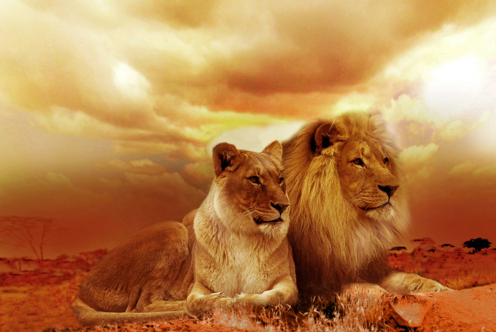
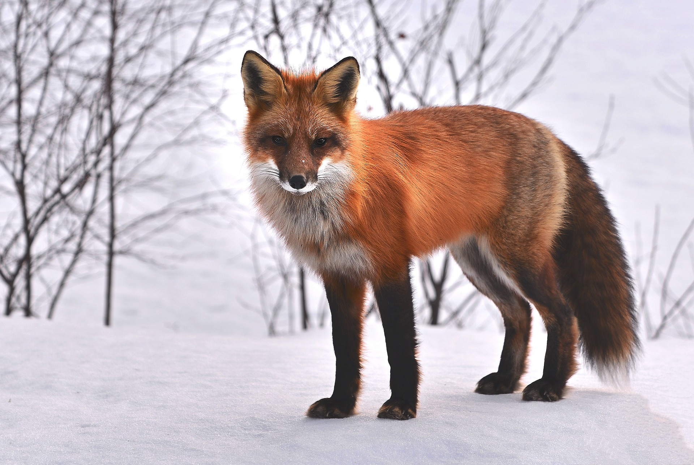
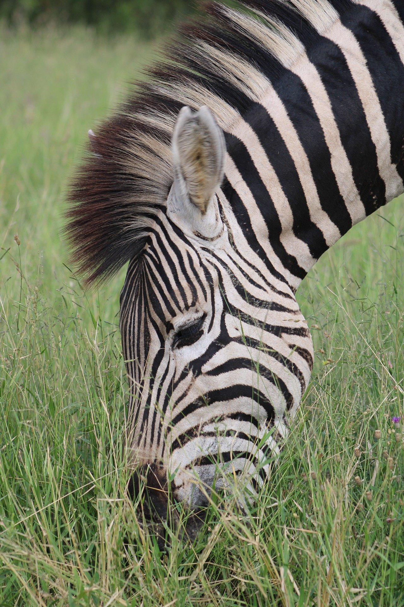
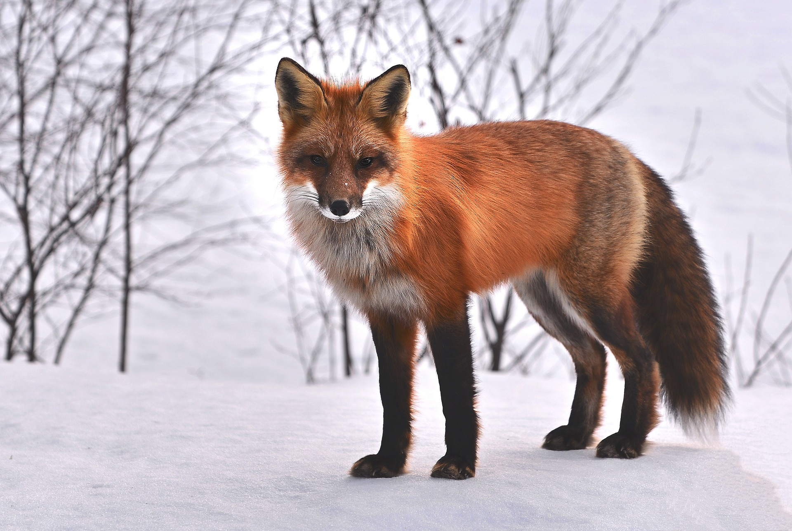
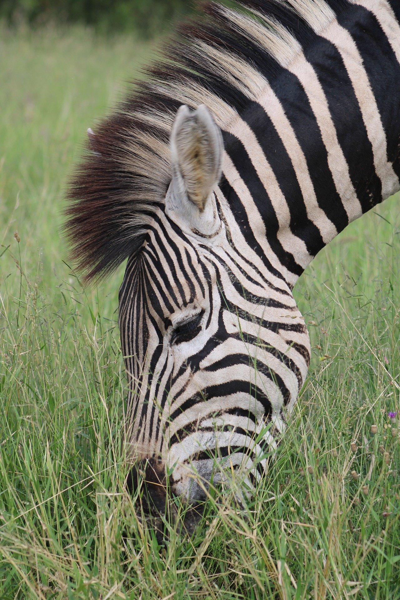

Kaplumbağa (ya da tosbağa) Testudines takımını oluşturan çok sert ve kemiksi bir kabuk içinde yaşayan, ağır yürüyüşlü, dört ayaklı, sürüngen bir hayvandır.


Dişi aslan grupları genellikle birlikte avlanır ve
çoğunlukla büyük toynaklıları hedef alır.
Aslan bir süper avcı ve kilittaşı avcısıdır.
Her ne kadar bazı aslanların fırsatlar ortaya çıktığında insanları avladıkları bilinse de,
tipik olarak bunu yapmazlar.
Rakip erkeklerle sürekli olarak savaşmaktan kaynaklanan yaralanmalar ömürlerini büyük ölçüde azalttığından, vahşi ortamda nadiren 10 ila 16 yıl arasında yaşamaktadırlar.
Kaplumbağa (ya da tosbağa) Testudines takımını oluşturan çok sert ve kemiksi bir kabuk içinde yaşayan, ağır yürüyüşlü, dört ayaklı, sürüngen bir hayvandır.

